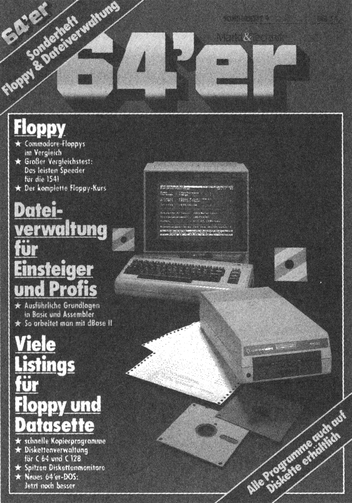

Die Daten sicher im Griff

Das herausragende Merkmal eines Computers mit angeschlossenem Massenspeicher ist seine Fähigkeit, nahezu unbegrenzte Mengen von Daten zu speichern, zu sortieren, zu verwalten und ansprechend auszudrucken. Um welche Art von Daten es sich dabei handelt, ist dem Computer vollkommen egal. Ob es sich um eine Verwaltung der Directory-Einträge oder die Organisation der Schallplattensammlung handelt, der C 64 erledigt die ihm gestellten Aufgaben schnell und sorgfältig, sofern entsprechende Programme im Computer und externe Massenspeicher dazu vorhanden sind.
Welche Diskettenlaufwerke für die Systeme C 16, C 64, Plus/4 und C 128 am besten geeignet sind, erfahren Sie in einem großen Vergleich der Floppy-Stationen 1541, 1551, 1570 und 1571. Ein wichtiges Kriterium ist sicherlich, welches Laufwerk für welchen Computer ideal oder nur mit gewissen Einschränkungen der Kompatibilität geeignet ist. Da die Laufwerke von Commodore allesamt nicht zu der schnellen Truppe zählen, stellen wir Ihnen in einem ausführlichen Bericht die aktuellsten Floppy-Beschleuniger vor. Nach Studium dieses Artikels kennen Sie die Vor- und Nachteile der bekannnten Speeder und können die richtige Kaufentscheidung für Ihren speziellen Anwendungsfall treffen.
Für die Besitzer der 1541-Floppy haben wir den vollständigen Floppy-Kurs der Ausgaben 10/84 bis 6/85 abgedruckt. Hier plaudert der Autor der beiden Bücher »Die Floppy 1541« und »Die Floppy 1570/1571«, Karsten Schramm, aus seiner Trickkiste.
Weitere Kurse befassen sich mit der Programmierung von selbstgeschriebenen Datenverwaltungsprogrammen sowohl in Basic als auch in Assembler. Hier teilt der bekannte Buchautor Said Baloui sein umfangreiches Wissen in leicht verständlicher Form mit. Dem Renner unter den professionellen Datenverwaltungsprogrammen – dBase II – ist ein Einführungskurs gewidmet.
Nicht nur theoretisches Wissen wird in diesem Sonderheft vermittelt, auch die Praktiker kommen auf ihre Kosten. So gibt es zahlreiche Programme der verschiedensten Kategorien zum Abtippen. Wer keine Zeit beim Kopieren von Disketten verschwenden will, bekommt ein Kopierprogramm, mit dem in 90 Sekunden (zuzüglich Diskettenwechsel) eine komplette Diskette dupliziert ist. Auch das Formatieren der flexiblen Datenträger ist nunmehr in nur 10 Sekunden, ohne Verzicht auf die Qualität, zu erledigen. Mit einen raffiniertem Programm werden die bisher ungenutzten Spuren 36 bis 40 für die Speicherung zusätzlicher Daten zugänglich gemacht. Wem die normale Darstellung des Inhaltsverzeichnisses (Directory) einer Diskette nicht gefällt, der erhält einige Programme, mit denen der Ausdruck optimiert und der Informationsgehalt gesteigert werden kann.
Daß Gutes noch besser werden kann, beweisen wir mit dem neuen 64'er-DOS V4. Diese neue Version des 64'er-DOS aus der Ausgabe 3/86 beinhaltet den kompletten Monitor SMON und viele zusätzliche, komfortable Monitor- und Basic-Befehle. Es wird so zu einem vorzüglichen Hilfsmittel für Programmierer.
Zahlreiche weitere Programme runden dieses Sonderheft ab. Für den Datenschutz werden bei einem Löschvorgang nicht nur die Einträge im Inhaltsverzeichnis eliminiert, sondern die Daten tatsächlich »physikalisch« von der Diskette entfernt. Anhänger schneller Sortierroutinen dürfen sich auf Quicksort mit einem neuen Algorithmus freuen. 1000 Elemente sind in nur drei Sekunden geordnet. C 128-Besitzer erhalten zum eingebauten Monitor zusätzlich einen Diskettenmonitor und ein universelles Autostartprogramm.
Alles in allem wieder ein Sonderheft, aus dem sowohl der Anfänger in Sachen Datenverwaltung und Massenspeicher, als auch der Profi wertvolle Tips und Informationen ziehen kann.
(Albert Absmeier)